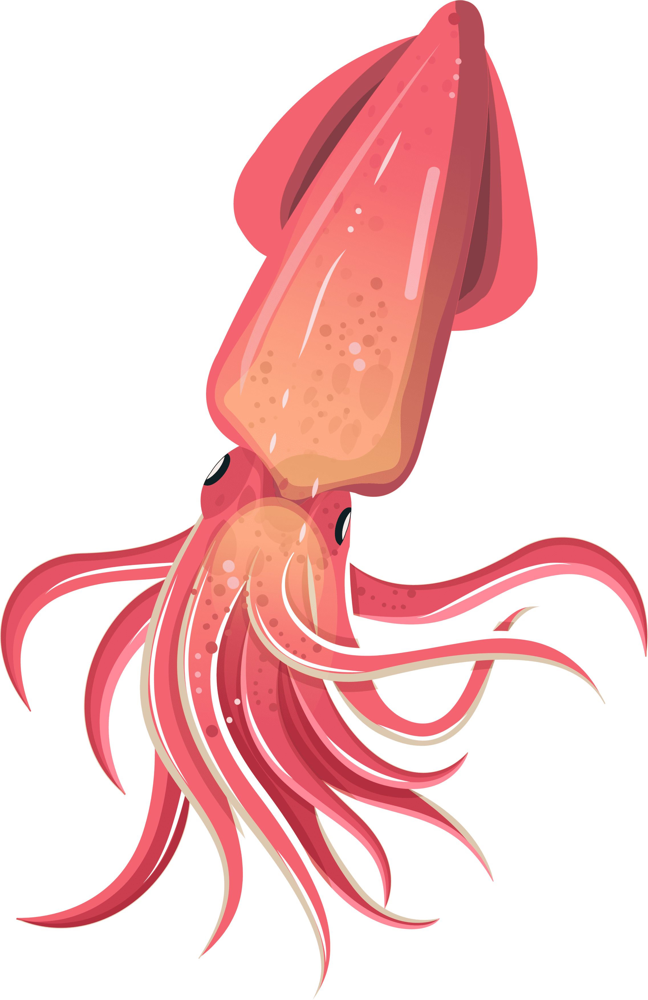
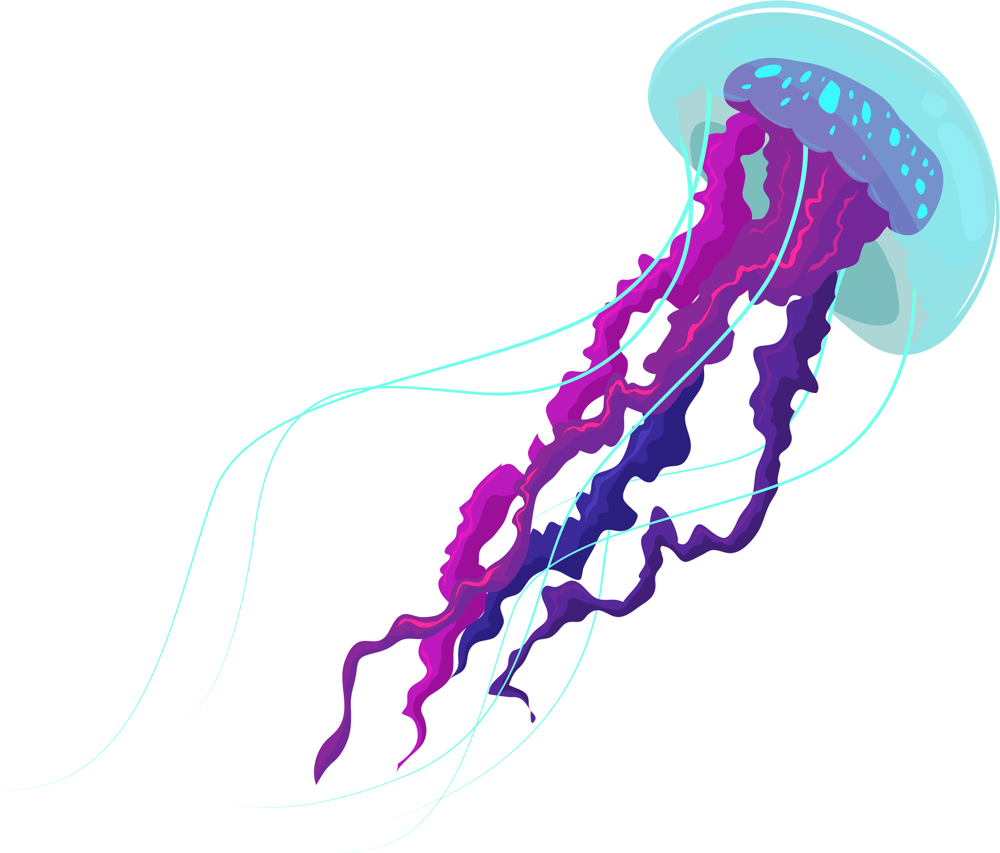
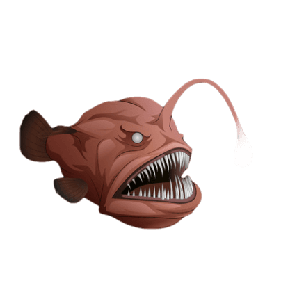
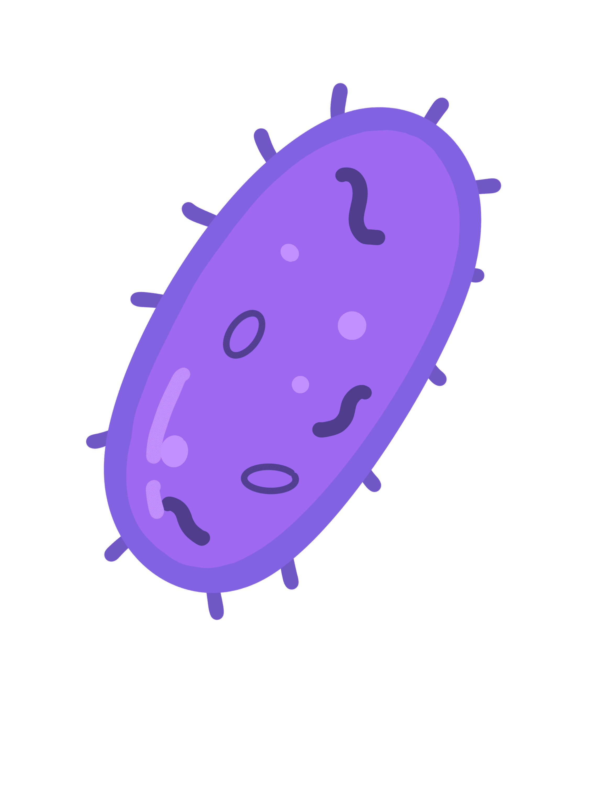

Die oberste Schicht des Ozeans wird als epipelagische Zone bezeichnet und erstreckt sich von der Meeresoberfläche bis zu einer Tiefe von etwa 200 Metern.
Diese Zone ist durch ausreichend Sonnenlicht gekennzeichnet, das bis in große Tiefen eindringen kann.
Dies ermöglicht die Photosynthese, was wiederum das Wachstum von Algen und Phytoplankton fördert.
Die epipelagische Zone ist reich an Nährstoffen und beherbergt eine Vielzahl von Meereslebewesen, darunter Fische, Meeressäuger und Vögel.
Mesopelagische Zone (200-1000 Meter):

Unterhalb der epipelagischen Zone liegt die mesopelagische Zone, die Tiefen zwischen 200 und 1000 Metern umfasst. In dieser Zone nimmt das Sonnenlicht rapide ab, und es wird zunehmend dunkler. Der Druck steigt, und die Temperaturen werden kälter. Die meisten Fische in der mesopelagischen Zone sind an die Dunkelheit angepasst und verfügen über biolumineszente Organe, um sich zu orientieren und zu kommunizieren.
Bathypelagische Zone (1000-4000 Meter):

Die bathypelagische Zone erstreckt sich von 1000 bis 4000 Metern Tiefe und ist eine Region der extremen Bedingungen. In dieser Tiefe ist es nahezu dunkel, die Temperaturen sind nahe dem Gefrierpunkt, und der Druck erreicht enorme Werte. Dennoch gibt es erstaunliche Lebensformen, die an diese extremen Bedingungen angepasst sind, darunter Quallen, Tiefseeanglerfische und andere bizarre Kreaturen.
Abyssopelagische Zone (4000 - 6000 Meter):

Noch tiefer erstreckt sich die abyssopelagische Zone, die von 4000 Metern bis zum Meeresboden reicht. Hier finden sich einige der unerforschten Tiefseebereiche, in denen Druck und Dunkelheit extrem sind. Die Lebensformen in dieser Zone haben erstaunliche Anpassungen entwickelt, um in diesem lebensfeindlichen Umfeld zu überleben. Hier treffen wir auf Tiefseegiganten wie Riesenkalmare und seltsame Arten, die auf Nahrungsquellen aus Vulkanismus und Hydrothermalquellen angewiesen sind
Hadopelagische Zone (ab 6000 Meter):

Die tiefste Meereszone ist die hadopelagische Zone, die Tiefen von über 6000 Metern umfasst. Diese extremen Tiefen sind schwer zugänglich und stellen eine der letzten großen unerforschten Regionen der Erde dar. In dieser Zone sind die Bedingungen extrem, mit extrem hohem Druck, extrem niedrigen Temperaturen und kaum vorhandigem Licht. Nur wenige Organismen haben sich an diese extremen Bedingungen angepasst, darunter einige Bakterien und Einzeller.